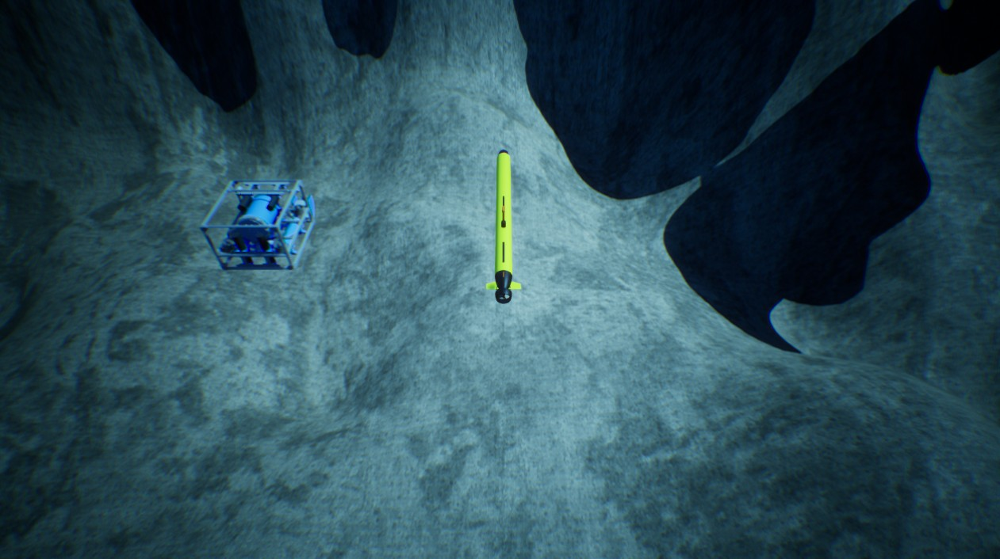

多智能体示例 multi_agent.py
使用 HoloOcean，您可以同时控制多个智能体。与其调用 .step()（该方法既向主智能体发送单个指令，又推进仿真进程），不如调用 .act()。.act() 仅向特定智能体发送指令，而不会推进仿真进程。
当所有智能体都接收到各自的动作指令后，您可以调用 .tick() 来推进仿真进程。
调用 .act() 之后，每次调用 .tick() 时，系统都会向该智能体发送相同的指令。若要更改指令，只需再次调用 .act() 即可。
tick 返回的状态信息也有所不同。
此时返回的状态是一个字典，其键为智能体名称，值为对应的传感器数据字典。
按 Tab 键可在不同智能体的视图之间切换。更多信息请参阅快捷键部分。

import holoocean
import numpy as np
cfg = {
"name": "test_rgb_camera",
"world": "SimpleUnderwater",
"package_name": "Ocean",
"main_agent": "auv0",
"ticks_per_sec": 60,
"agents": [
{
"agent_name": "auv0",
"agent_type": "TorpedoAUV",
"sensors": [
{
"sensor_type": "IMUSensor"
}
],
"control_scheme": 0,
"location": [0, 0, -5]
},
{
"agent_name": "auv1",
"agent_type": "HoveringAUV",
"sensors": [
{
"sensor_type": "DVLSensor"
}
],
"control_scheme": 0,
"location": [0, 2, -5]
}
]
}
env = holoocean.make(scenario_cfg=cfg)
env.reset()
env.act('auv0', np.array([0,0,0,0,75]))
env.act('auv1', np.array([0,0,0,0,20,20,20,20]))
for i in range(300):
states = env.tick()
# states is a dictionary
imu = states["auv0"]["IMUSensor"]
vel = states["auv1"]["DVLSensor"]